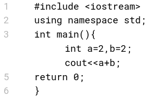
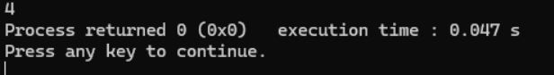
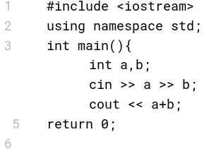
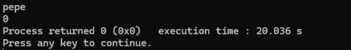
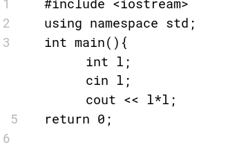
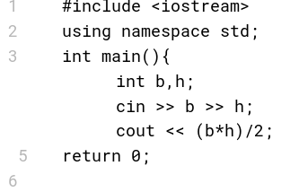

lección 5
operaciones aritméticas
Para hacer sumas, restas, multiplicaciones… etcétera en c++ sólo requerimos del uso de los operadores necesarios. Algunos de estos cambian en c++ notando a lo convencionalmente usado.
- + suma
- - resta
- * multiplicación
- / división
- % módulo (residuo de la división)
- ^ XOR (NO ES POTENCIA)
Aquí un ejemplo de cómo podríamos lograr la suma de dos números cuyos valores ya han sido declarados en variables

En este caso, la salida del código sería, evidentemente:

La entrada y salida puede lograrse al tratar con números, evidentemente.
Digamos que queremos hacer la suma de dos números a,b que le pedimos al usuario.
Este código se vería algo así:

No podemos meter datos que no sean números a esta variable, pues no es el tipo de dato correcto, en caso de hacer algo así notaremos el siguiente error.

Para cualquier otra operación sólo es cuestión de usar otro operador. Notemos que es necesario seguir la jerarquía de operaciones para conseguir un resultado apropiado.
Por ejemplo, calculemos el área de un cuadrado.

O, el área de un triángulo

problemas
Muijijiji, es posible que hayamos vuelto a cachar desprevenido, aunque lo más probable es que no... chale.
¡Aquí te van unos problemas!
En caso de que tengas dudas revisa las páginas encontradas en:
recursos
No vayas a usar ninguna inteligencia artifical, copiar, etc etc.
Si haces eso ¿cuál es el chiste carnal?
NOTA
Para resolver problemas relacionados con residuos de división, leer la siguiente página
mod